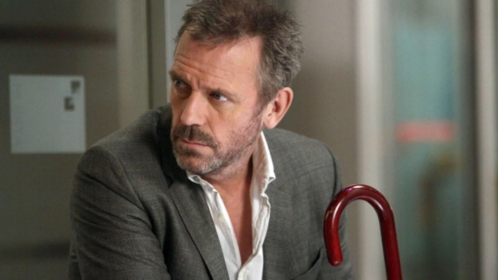
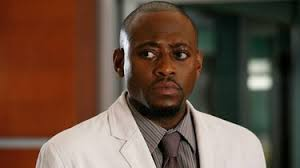
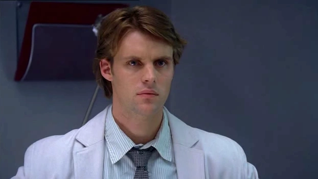
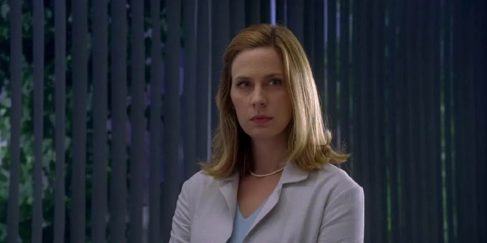
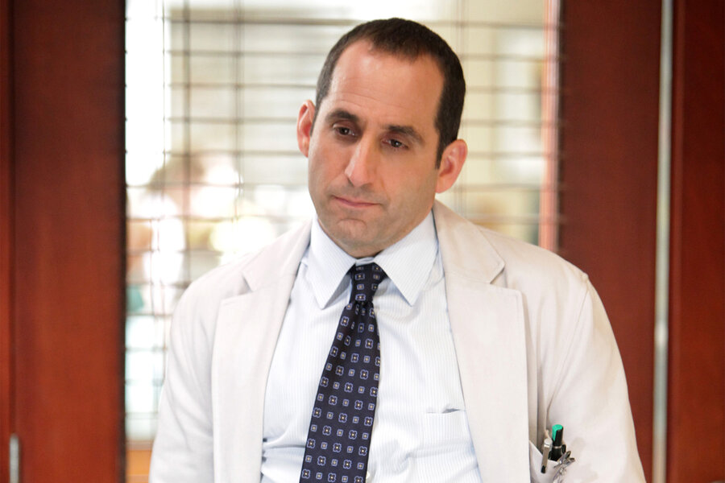
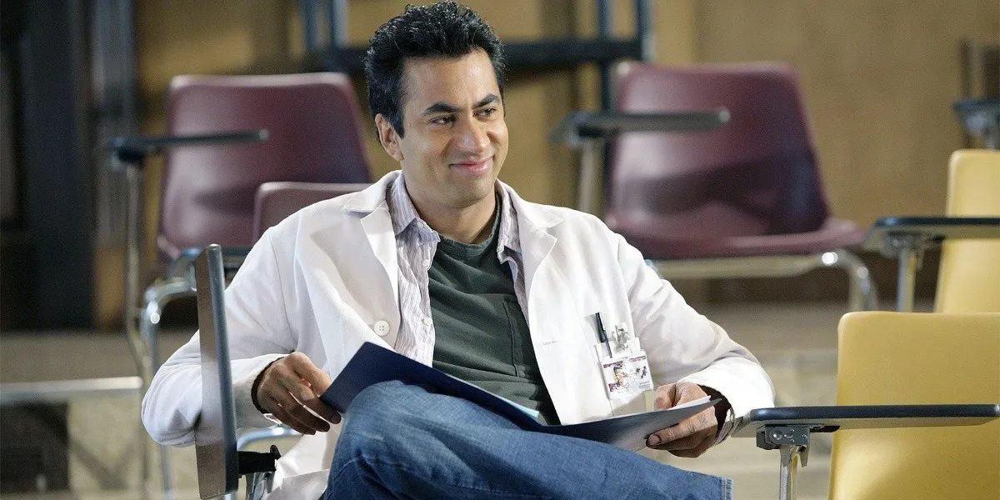
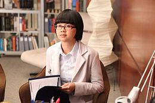
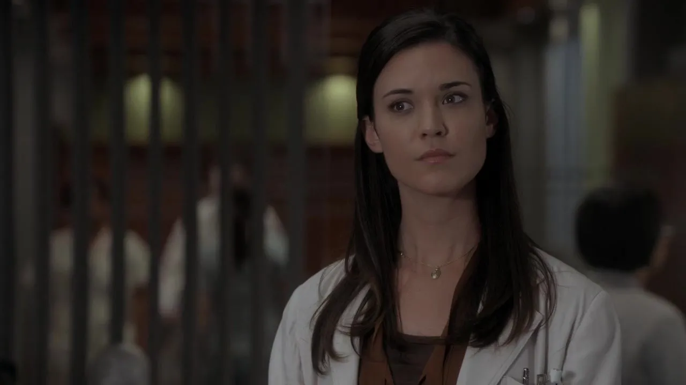

PROTAGONISTAS

Gregory House
House es un genio médico con una personalidad difícil. Es extremadamente inteligente y perspicaz,
pero también es cínico, manipulador, sarcástico y a menudo desagradable en sus interacciones con los demás.
Tiende a desafiar las normas y a cuestionar las convenciones. Su visión del mundo es a menudo pesimista
y desconfiada, lo que se refleja en su enfoque hacia la medicina y la vida en general, afectando su
trabajo y relaciones personales. Es un adicto dependiente del vicodin, por lo que eso influye de
gran manera en sus relaciones, actitudes y trabajo.

Lisa Cuddy
Cuddy es una figura de autoridad en el hospital, y como tal a menudo se encuentra en
desacuerdo con House debido a su enfoque poco convencional y su comportamiento desafiante,
por lo que ella se encarga de mantenerlo a raya, aunque haga caso omiso. Su relación
con house es una de las dinámicas centrales de la serie. Tienen una relación complicada
que oscila entre el conflicto profesional y una conexión personal más profunda.
James Wilson
Wilson es conocido por su empatía y comprensión. A diferencia de House, que a menudo
es frío y cínico, Wilson tiene una habilidad natural para conectar emocionalmente
con las personas, tanto en su vida personal como profesional. La lealtad de Wilson
hacia House es una de sus características definitorias. A pesar de las dificultades
y el comportamiento autodestructivo de House, Wilson sigue siendo su amigo cercano
y está dispuesto a apoyarlo, incluso cuando eso significa sacrificarse personalmente,
tanto que a menudo actúa como el contrapeso moral a las decisiones y métodos cuestionables de House.

Eric Foreman
Foreman es un médico altamente competente, profesional, ambicioso y seguro sobre sus
habilidades médicas. Su personalidad contrasta perfectamente con la de house para los
diagnósticos porque, a diferencia de su jefe, él sigue las reglas y se adhiere a un
enfoque más tradicional y estructurado en la medicina. Foreman respeta el talento
de House, pero se opone a su estilo desafiante y a menudo destructivo y, diariamente,
se encuentra en una posición en la que debe equilibrar la ética médica con los métodos
poco ortodoxos de House

Alisson Cameron
Cameron es conocida por su profunda empatía y compasión hacia los pacientes.
A menudo se preocupa en exceso por el bienestar de los pacientes y busca entenderlos,
lo que a veces la pone en conflicto con el enfoque más frío y profesional de House.
Esta personalidad aporta una dimensión emocional y moral al equipo dentro de sus
compañeros competitivos y dedicados mayormente a resolver casos y no interesarse
mucho por los pacientes. Destaca de los demás por su fuerte sentido de moralidad
y ética en su trabajo, siguiendo las reglas y exponiendo las malas prácticas
(pero eficientes) de house.

Robert Chase
Médico muy competente con habilidades clínicas destacadas. Chase
proviene de una familia adinerada y su trasfondo influye en su carácter. A veces
se siente atrapado entre sus deseos personales y las expectativas de su familia,
lo que añade una capa de complejidad a su comportamiento y decisiones. Debido
a esto, demuestra tener ambiciones profesionales y está motivado por el deseo
de avanzar en su profesión. Tiene varios momentos de duda y conflictos con
house, pero su habilidad para navegar estas dificultades y encontrar su propio
camino en la medicina es una parte importante de su desarrollo como personaje.

Amber Volakis
Es una médica competente y capaz, trabajando inicialmente como una de las
candidatas en la competencia para el puesto en el equipo de diagnóstico
de House. Su habilidad y conocimiento son evidentes, y su desempeño profesional
es impresionante. Amber tiene una personalidad fuerte y no duda en expresar sus
opiniones y enfrentarse a desafíos. Su actitud a veces provoca fricciones con
sus colegas y con House, lo que contribuye a su carácter distintivo. Su aparición
y eventual salida de la historia tiene un gran impacto en los personajes principales,
en especial Wilson con quien mantenía una relación.

Chris Taub
Taub es un médico con una sólida formació, gran experiencia y habilidades clínicas.
Su experiencia en el campo de la medicina le permite contribuir significativamente
al equipo. Tiende a ser más pragmático y realista en comparación con algunos de sus
colegas. Su enfoque hacia la medicina y su actitud hacia los problemas se basan en
una visión más práctica y menos idealista. Al igual que los otros miembros del equipo,
Taub cuestiona los métodos de house pero no le queda más que acatar órdenes. A pesar
de tener diferentes problemas personales, como un matrimonio fallido y malas decisiones,
sus emociones no afectan a su trabajo.

Lawrence Kutner
Kutner es conocido por su actitud positiva y su energía contagiosa. Su optimismo y
entusiasmo por la medicina son evidentes en su enfoque hacia el trabajo y en sus
interacciones con sus colegas. Su relación con otros miembros del equipo es
generalmente amistosa y cooperativa. Kutner tiende a ser un mediador positivo en
el equipo incluyendo a house. Su aparición es muy importante en el equipo porque
agregar energía y carisma, lo cual equilibra los lados negativos del equipo y las
actitudes despesctivas de house. Su suicidio en la serie impacta profundamente
a sus colegas y al desarrollo de la trama. Su partida es un evento significativo
que afecta a la dinámica del equipo y a los personajes que lo rodean, en especial a House.
Remy Hadley
A pesar de su carácter reservado, Hadley es una médica altamente competente y talentosa.
Tiene un fuerte sentido de la moralidad y la ética, lo que a menudo la lleva a cuestionar
y desafiar las decisiones y métodos poco convencionales de House, ya que su enfoque hacia
la medicina está influenciado por sus propios principios y valores personales. House
además la empuja a enfrentar sus propios límites y principios. La historia de este
personaje se ve muy afectada debido a su enfermedad llamada Huntington, que a lo largo
de la trama la influencia de manera significativa cambiando su carácter, vida personal y profesión.

Chi Park
Park es una médica joven y entusiasta que aporta una energía fresca y una perspectiva nueva
al equipo de diagnóstico. Su juventud y entusiasmo por la medicina son evidentes en su enfoque
hacia el trabajo, cometiendo errores pero aprendiendo de ellos. A pesar de su habilidad,
muestra una notable inseguridad y cautela en su trabajo. A menudo se siente abrumada por
la presión de trabajar con House y el equipo, y su falta de experiencia a veces la hace
dudar de sí misma. Aunque es amable y accesible, Park tiende a ser más introvertida en
comparación con algunos de sus colegas. Su personalidad reservada y su tendencia a mantener
cierta distancia emocional son parte de lo que la define.

Jessica Adams
Adams es una médica dedicada que muestra un fuerte compromiso con sus pacientes. Su compasión
y empatía son evidentes en su enfoque hacia el cuidado de los pacientes y en su interacción
con ellos. Adams muestra un respeto profesional hacia House, reconoce su habilidad y su
conocimiento en el diagnóstico médico, aunque a veces sus métodos poco convencionales y su
actitud desafiante le resulten problemáticos por sus principios éticos. Su paso por el equipo
la hizo desarrollar una mejor confianza, habilidades y manejo de situaciones complicadas.